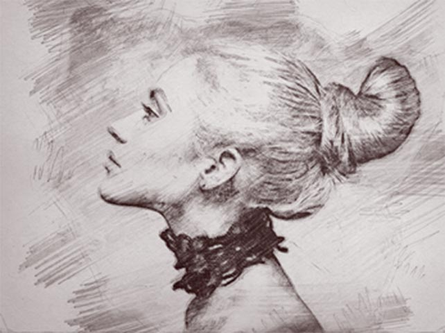
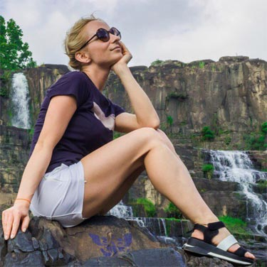
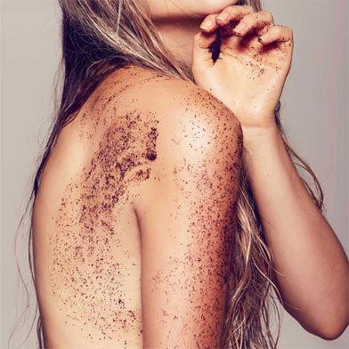

Статьи
 Правильно говорить реснички, а не волосы. Но не будем умничать, «волосы» как-то понятней. Убрать волосы из носа можно и поверьте это не адская боль, все терпимо (мне совсем не больно). Но!!! Должна предупредить, что данные волоски защищают нас от пыли, грязи, бактерий...не давая им проникать внутрь. Поэтому не советую слишком глубоко удалять. Лучше убрать ту часть волос, которая видна и приносит эстетическое неудобство. Так же минус «глубокого удаления» волос из носа в том (сейчас многие скажут «фуууу» 😂, что выделениям из носа негде задерживаться и они просто вытекают... Решать вам, удалять или нет! Главное, чтобы ничего не мешало вам высоко и гордо задирать нос.
Если раздражение после эпиляции уже возникло, Вы можете снять его с помощью специальных бактерицидных средств, например, с содержанием кортизона. Можно приготовить такое средство и самостоятельно — раскрошите 2 таблетки аспирина и добавьте к порошку глицерин. Такое средство можно применять для лечения раздражения после депиляции как на теле, так и на лице. Для снятия раздражения после депиляции подойдет также любое косметическое средство после бритья — даже мужское, если вам подходит запах. К счастью, сегодня есть масса мужских средств после бритья без запахов, а также специальная продукция для женщин. Хорошим средством для снятия раздражения после депиляции считается «Прополис гелиант» — его можно приобрести в аптеке, а также детские успокаивающие крема и присыпки, заживляющие средства типа «Спасатель», травяные компрессы и ванночки. Реакции кожи — очень индивидуальны, поэтому никто, лучше вас, не сможет подобрать вам подходящее средство против раздражения после эпиляции.
 Практически у всех женщин "рыльце в пушку"... как правило, такие волосы мало заметны: они светлые, мягкие и короткие. Этот пушок защищает кожу лица от различных погодных условий (ветер, солнце...), так же от пыли. Но, если эстетически вам не комфортно с волосами на лице, то их можно удалить сахарной пастой. Ранее себе я удаляла лишь волосы над губой. Тут решила пройтись сахаром по всему лицу, благо дёргать есть что 🙈. Ощущения конечно не очень приятные, но... мне очень понравился эффект. Если до, трогая свою кожу, я называла себя "персик", то после #шугаринг это "нектарин". Очень непривычно и в то же время приятно иметь такое гладкое лицо😀. Хотя кожа лица у меня чувствительная, проблемная с наличием купироза, никаких высыпаний не было. Немного горело лицо сутки (все таки первый раз, непривычно коже) Пара рекомендаций, если сделали депиляцию лица 📌 48 часов воздержитесь от солнечных ванн, солярий (24 часа - остальные части тела) 📌 48 часов не ходим в хлорированный бассейн (24 часа - остальные части тела) 📌 от 1 до 2 дней не подпускаем к лицу бородатых, щетинистых мужей. Дабы избежать шелушения (данный "скраб" ещё больше травмирует кожу). 📌 если по каким-то причинам лицо потеет - протираем хлоргексидином. 📌 48 часов никаких саун, бань! Если до депиляции на лице НЕ было темного, жёсткого волоса, то он таким и не отрастет!!! ШУГАРИНГ ЭТО НЕ БРИТВА!!! Если вы прекратите удалять растительность на лице, волос восстановится в свой первоначальный вид. Можете следить за отрастанием моих волос на лице, если у вас присутствуют сомнения!
 Дорогие коллеги, как часто вы встречаетесь с вросшими волосами у клиентов? Наверное, более, чем часто. Давайте сегодня поговорим об одном из типов вросших волос – о гиперкератозе. Так что же это такое? 🤔 Гиперкератоз – это чрезмерное утолщение рогового слоя эпидермиса. Причины этого нарушения до конца не выяснены, однако большинство специалистов сходятся во мнении, что гиперкератоз может быть вызван как внешними, так и внутренними причинами. К внутренним причинам гиперкератоза относят недостаток витаминов А и С (как генетическая особенность, так и приобретенная дисфункция), ведущий к патологиям кожи с нарушением кератинизации. Нарушение кератинизации может возникнуть из-за увеличения числа клеток базального слоя эпидермиса, которое так же может возникнуть из-за гормональных причин. К внешним факторам относят повышенную или длительную нагрузку на кожу. Такое внешнее давление провоцирует ответную реакцию организма, а именно усиленное деление клеток. Нарушается обычный процесс слущивания, когда мертвые клетки перестают вовремя удаляться, хотя на их место уже пришли новые. Гиперкератоз значительно усложняет процесс эпиляции, так как волоски просто не могут быть удалены из-за очень толстого слоя ороговевших клеток. Самым эффективным средством в борьбе с гиперкератозрм является химический пилинг☝ То есть лосьон или гель от вросших волос. Если говорить об использовании скраба, то он не должен быть чересчур жестким, чтобы не травмировать живые клетки эпидермиса, что может привести к усиленному гиперкератозу. Дорогие мастера, не забывайте консультировать клиентов с такой проблемой по домашнему уходу!💐 Дорогие клиенты, не забывайте ухаживать за кожей самостоятельно, ведь только при правильном домашнем уходе вы сможете забыть о проблеме вросших волос!🤗ице, если у вас присутствуют сомнения!